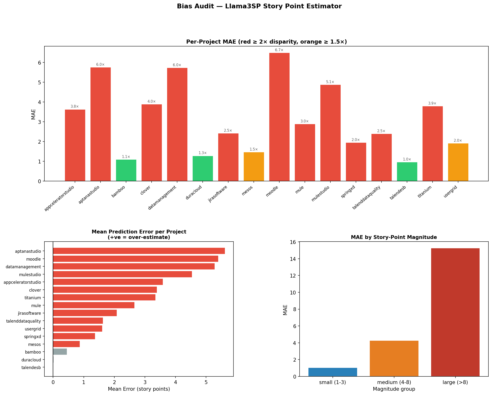

Model: Llama3SP (DEVCamiloSepulveda/2-LLAMA3SP-talendesb)
Metric: Mean Absolute Error (MAE) & Disparity Ratio (group MAE / min group MAE)
⚠ Rows highlighted in yellow have disparity ratio ≥ 1.5×. Rows in red have disparity ratio ≥ 2.0×, indicating potential bias.
| group | n | mae | rmse | acc_at_1 | mean_error | bias_direction | disparity_ratio |
|---|---|---|---|---|---|---|---|
| appceleratorstudio | 31 | 3.6332 | 4.3317 | 0.1613 | 3.5838 | over | 3.7687 |
| aptanastudio | 31 | 5.7664 | 7.2809 | 0.0968 | 5.6127 | over | 5.9816 |
| bamboo | 31 | 1.0915 | 1.3951 | 0.5161 | 0.4483 | neutral | 1.1322 |
| clover | 31 | 3.8894 | 8.4147 | 0.4194 | 3.3879 | over | 4.0346 |
| datamanagement | 31 | 5.7369 | 10.3967 | 0.2581 | 5.2807 | over | 5.951 |
| duracloud | 31 | 1.2807 | 1.7504 | 0.5161 | 0.0146 | neutral | 1.3285 |
| jirasoftware | 31 | 2.4184 | 3.7102 | 0.4194 | 2.0782 | over | 2.5087 |
| mesos | 31 | 1.4669 | 2.0318 | 0.5484 | 0.8722 | over | 1.5217 |
| moodle | 31 | 6.5 | 11.6873 | 0.1935 | 5.3911 | over | 6.7426 |
| mule | 31 | 2.8936 | 4.0594 | 0.3226 | 2.6582 | over | 3.0016 |
| mulestudio | 31 | 4.878 | 6.4186 | 0.0968 | 4.5393 | over | 5.0601 |
| springxd | 31 | 1.9494 | 2.546 | 0.3548 | 1.3668 | over | 2.0222 |
| talenddataquality | 31 | 2.3962 | 4.4126 | 0.6452 | 1.6241 | over | 2.4857 |
| talendesb | 31 | 0.964 | 1.1447 | 0.6452 | -0.0002 | neutral | 1.0 |
| titanium | 31 | 3.7966 | 4.9458 | 0.2258 | 3.3399 | over | 3.9383 |
| usergrid | 31 | 1.9143 | 2.622 | 0.3871 | 1.6064 | over | 1.9858 |
| group | n | mae | rmse | acc_at_1 | mean_error | bias_direction | disparity_ratio |
|---|---|---|---|---|---|---|---|
| small (1-3) | 303 | 1.0391 | 1.2943 | 0.5908 | 0.1416 | neutral | 1.0 |
| medium (4-8) | 154 | 4.2733 | 4.6318 | 0.0065 | 4.2733 | over | 4.1126 |
| large (>8) | 39 | 15.2541 | 17.9089 | 0.0 | 15.2541 | over | 14.6804 |
| group | n | mae | rmse | acc_at_1 | mean_error | bias_direction | disparity_ratio |
|---|---|---|---|---|---|---|---|
| has_description | 449 | 3.1992 | 5.8225 | 0.3519 | 2.6147 | over | 1.1444 |
| no_description | 47 | 2.7955 | 4.8333 | 0.4681 | 2.5944 | over | 1.0 |
